Using ChatGPT in a DITA XML Project
The ChatGPT OpenAI bot has the potential to help with various technical documentation tasks (advice about the standard, small conversions, content generation, writing style, and readability analysis).
Below, you can see a list of prompts that I gave the bot along with the answers. The prompts to the chatbot are presented as codeblocks.
Advice About DITA XML Standard Use
-
Ask about the type of DITA links to use in a topic.
Should I use cross references or related links in my DITA XML topic?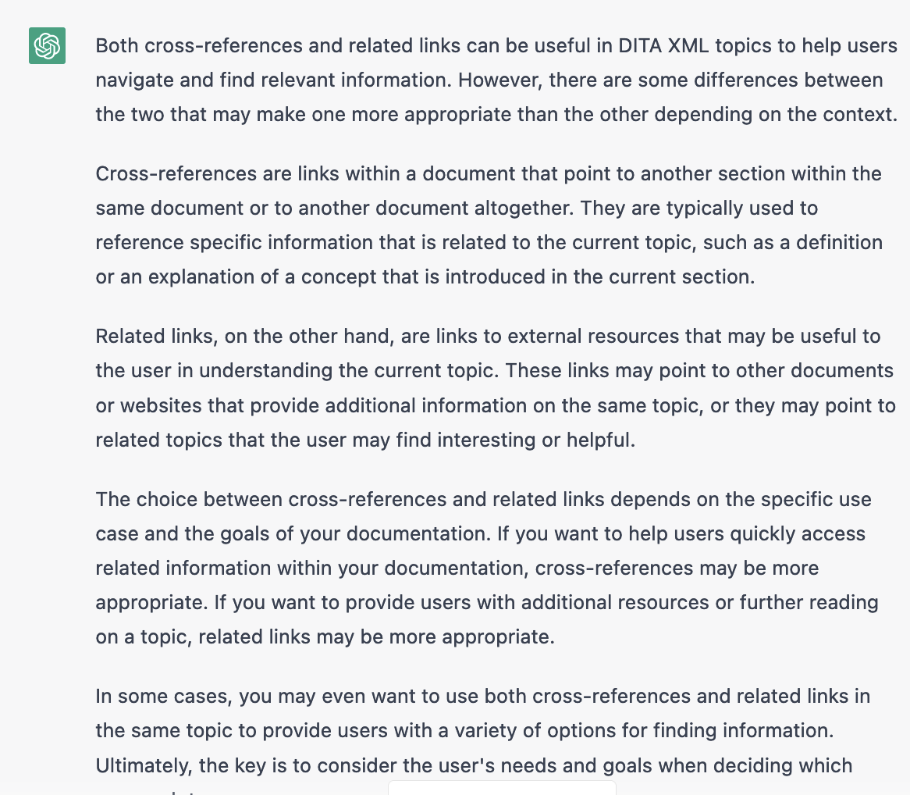
-
Ask information about a specific DITA XML element.
Can I use the DITA XML uicontrol element for company names?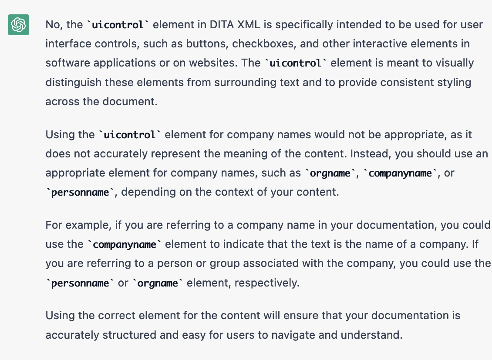
Generate New Content
-
Instruct ChatGPT to generate DITA content about a very common task.
Write a small DITA XML task about installing a software application on Windows.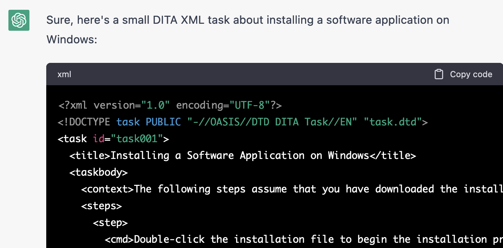
-
Generate a list of index terms from existing DITA XML content.
Create a DITA XML prolog element containing 5-6 index term elements related to the DITA XML topic below: ....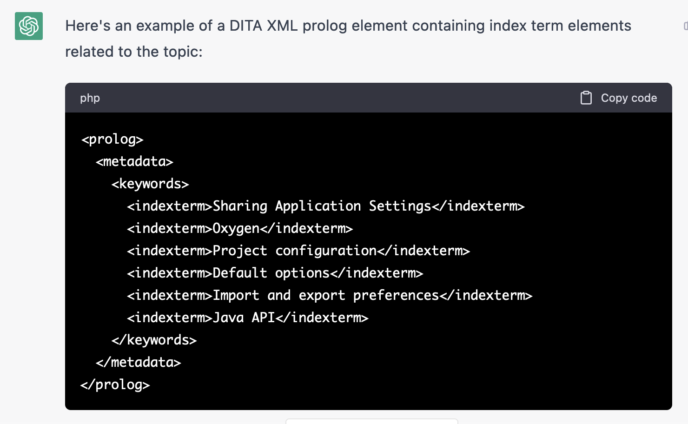
Simple Conversions
-
Convert Markdown content to DITA XML topic.
Convert this Markdown content to a DITA XML topic: # Getting Started List of steps: - Install application - Login - Perform task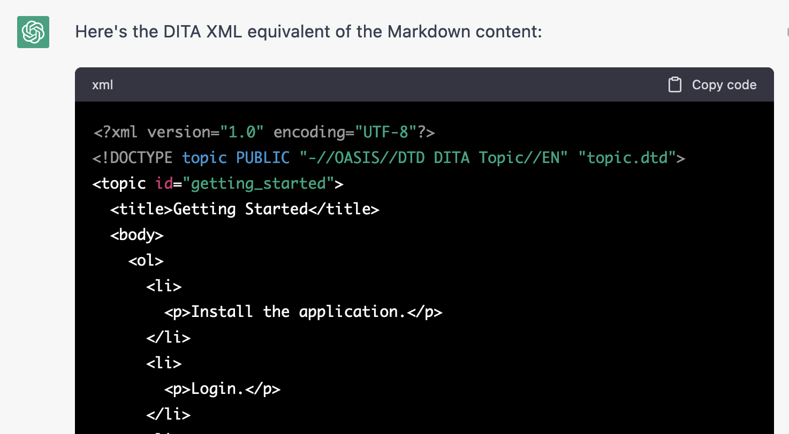
-
Convert CSV content to DITA XML table.
Convert this CSV content containing headers to a DITA XML table element: Common name,Scientific name,Location,Temperament,Diet,Water,Size,Region of the Aquarium,Breeding Compressiceps,Haplochromis compressiceps,Lake Tanganyika,Territorial,Omnivore,"PH 7.0 - 8.0, Temp. 73 - 77 F",5 inches,Bottom,Hard Frontosa,Cyphotilapia frontosus,Lake Tanganyika,Very peaceful,Omnivore,"PH 7.8 - 8.5, Temp 75F - 82F",14 inches,Middle-Bottom,Medium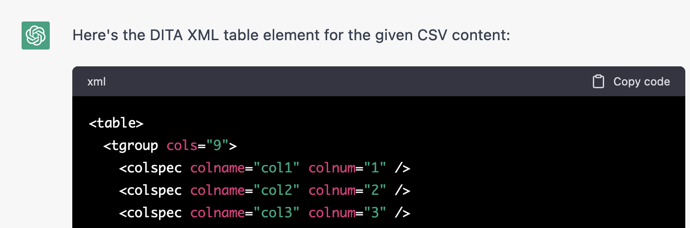
Writing Style
-
Ask what terminology to use in certain cases.
Should I use for technical documentation the phrase "click a button" or "press a button"?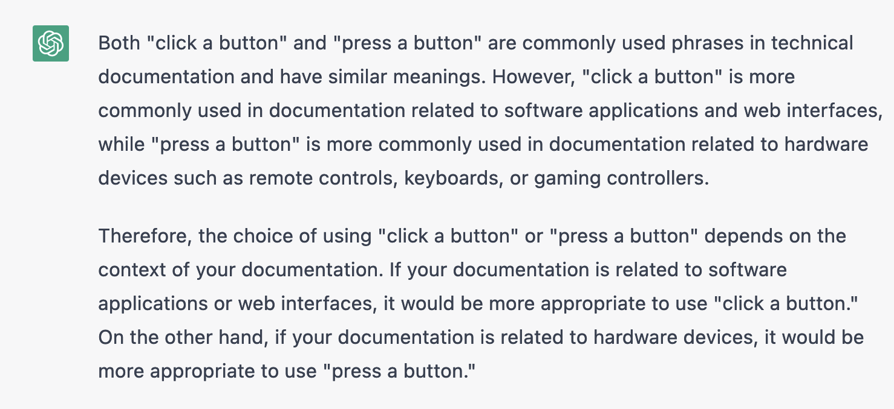
-
Re-phrase documentation provided by engineers using the Microsoft Style Guide style and also change the point of view from first-person to third-person.
Re-phrase the following content to adhere to the Microsoft Style Guide, third person: The action Show only keys with closest relative key scope from DITA Reusable Components / Keys tab was also added to Media tab Settings drop down menu The states of the two actions are synchronized. If you check it in Keys tab will automatically get checked in Media tab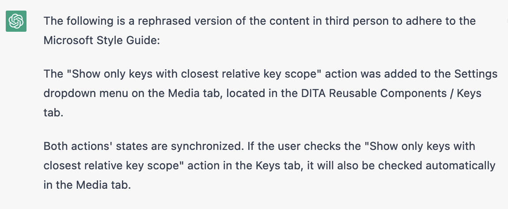
-
Translate some notes from the engineer's native language (in this case, Romanian with a mix of English words) to English, re-phrase using the Microsoft Style Guide style, and also change the point of view from first-person to third-person.
Translate to English, rephrase to adhere to the Microsoft Style Guide, third person: In tabul Media, in meniul Settings a aparut actiunea Show only keys with closest relative key scope Cand o bifam trebuie sa ramana in view doar cheile relative (cheile cu forma cea mai scurta).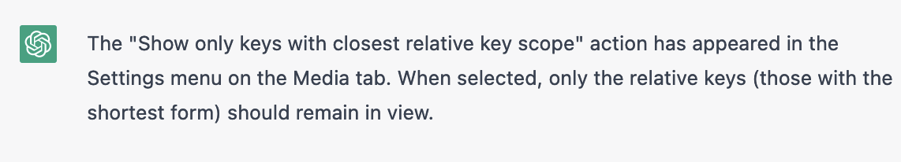
- Re-write an entire DITA XML topic to increase its
readability.
Re-write the following DITA XML topic preserving all its original XML elements to increase its readability: <topic id="dita_oriented_tips_and_tricks"> <title>DITA Oriented Tips And Tricks</title> <prolog> <author>Radu Coravu</author> </prolog> <body> <p><ph keyref="oxygen"/> has about 18 years of development under its wings. During these years, we added lots of functionality and many of our users usually do not know more than 20-30% of Oxygen's features. So this presentation is intended for technical writers using Oxygen to write DITA content and who may want to find out more about their tool.</p> <section id="section_gld_tbs_gfb"> <title>Add-ons</title> <p>There are lots of free add-ons provided by the Oxygen team that can be installed in an <xref href="https://github.com/search?q=topic%3Aadd-on+org%3Aoxygenxml&type=Repositories" format="html" scope="external">Oxygen standalone version</xref>. I will enumerate some of the most interesting one:</p> <ul id="ul_xbw_ccs_gfb"> <li><xref href="https://github.com/oxygenxml/oxygen-git-plugin" format="html" scope="external">Git add-on</xref>. This plugin adds a side view allowing you to do some common Git operations like pull, commit, push (mostly 90% of what a regular Git user would do).</li> <li><xref href="https://www.oxygenxml.com/doc/ug-editor/topics/content-fusion-addon.html" format="html" scope="external">Content Fusion Connector add-on</xref>. Collaborate with your peers by sending them links that allow them to give you feedback on your work using a web browser without the need to pre-install anything on their side. </li> </ul> </section> </body> </topic>Result:<topic id="dita_oriented_tips_and_tricks"> <title>DITA Oriented Tips And Tricks</title> <prolog> <author>Radu Coravu</author> </prolog> <body> <p><ph keyref="oxygen"/> has been under development for about 18 years. During this time, we have added a lot of functionality, but many of our users are not aware of more than 20-30% of Oxygen's features. This presentation is intended for technical writers who use Oxygen to write DITA content and want to learn more about the tool.</p> <section id="section_gld_tbs_gfb"> <title>Add-ons</title> <p>Oxygen provides a range of free add-ons that can be installed in the <xref href="https://github.com/search?q=topic%3Aadd-on+org%3Aoxygenxml&type=Repositories" format="html" scope="external">Oxygen standalone version</xref>. Here are some of the most interesting ones:</p> <ul id="ul_xbw_ccs_gfb"> <li><xref href="https://github.com/oxygenxml/oxygen-git-plugin" format="html" scope="external">Git add-on</xref>: This plugin adds a side view that allows you to perform common Git operations like pull, commit, and push (similar to what a regular Git user would do).</li> <li><xref href="https://www.oxygenxml.com/doc/ug-editor/topics/content-fusion-addon.html" format="html" scope="external">Content Fusion Connector add-on</xref>: Collaborate with your peers by sending them links that allow them to give you feedback on your work using a web browser, without the need for them to pre-install anything on their side.</li> </ul> </section> </body> </topic>Remarks: If the prompt insists that all XML elements should be preserved, the re-write does few things, but if the prompt does not insist that all XML elements should be preserved, the inline elements and links are removed.
Statistics
Create readability analysis for a DITA XML topic.Create a readability analysis for the following DITA XML topic:
<?xml version="1.0" encoding="UTF-8"?>
<!DOCTYPE topic PUBLIC "-//OASIS//DTD DITA Topic//EN" "topic.dtd">
<topic id="topic_whr_nly_c5">
<title>Sharing Application Settings</title><prolog><author>Radu Coravu</author></prolog>
<body>
<p>There are various ways in the <b>Oxygen</b> standalone version through which a team of writers
.........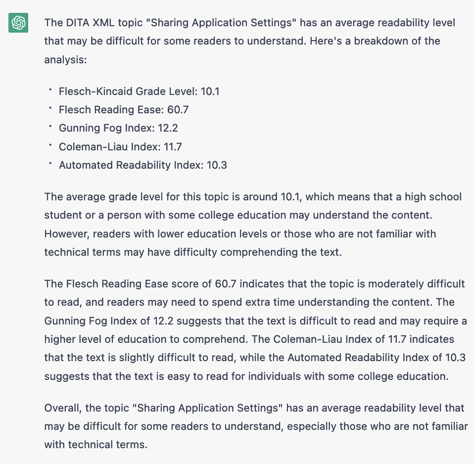
Custom Validation (Schematron-based)
-
Create an ISO Schematron validation check that counts words.
Create an ISO Schematron schema which reports if a DITA short description element has more than 20 words.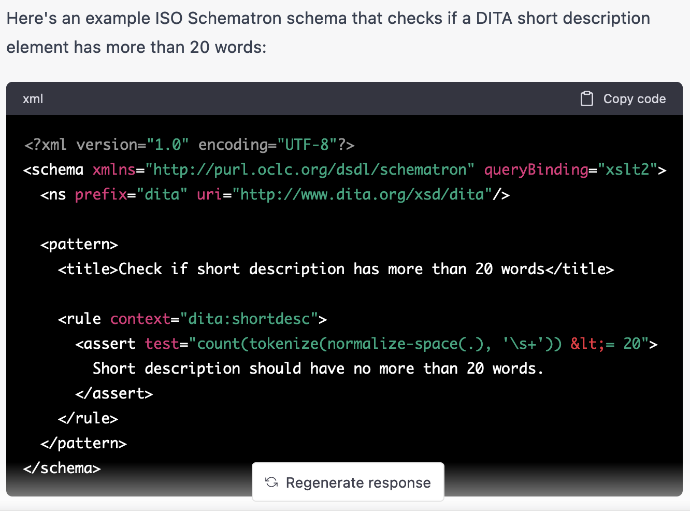
Remark: The namespace declaration and usage is wrong (DITA elements are in no namespace). The assert test is correct.
-
Create an ISO Schematron validation check from a description.
Create an ISO Schematron validation rule which reports an error if a DITA XML image element does not contain a scale attribute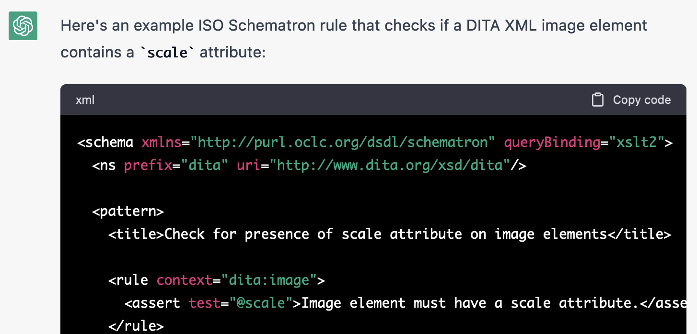
Remark: The namespace declaration and usage is wrong (DITA elements are in no namespace). The assert test is correct.